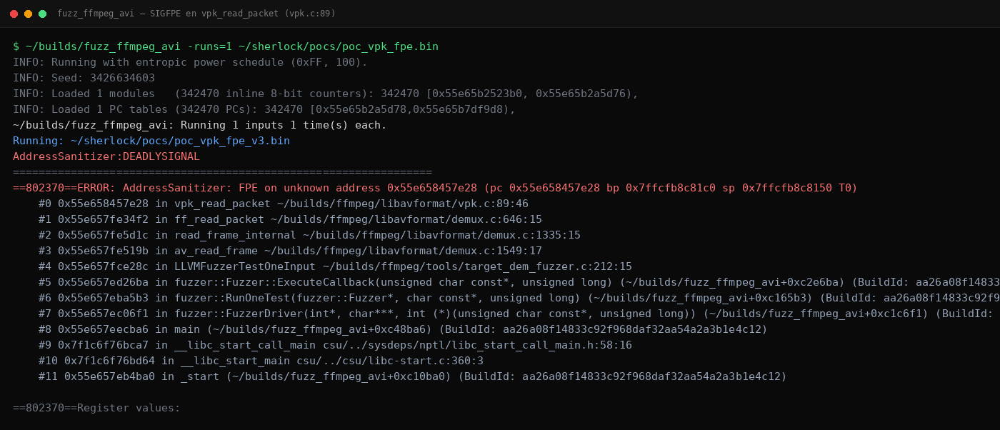
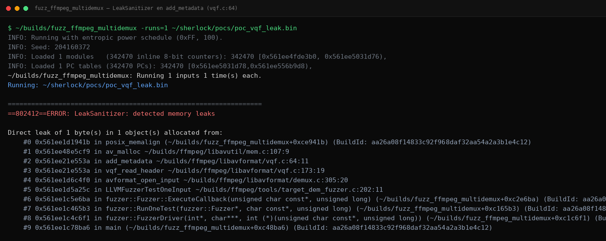
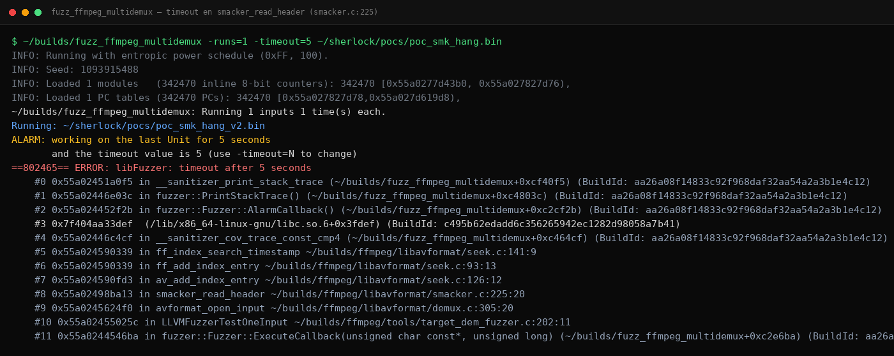

FFmpeg: Tres Demuxers, Un Mismo Pecado — SIGFPE en VPK, Memory Leak en VQF y Hang en Smacker
Tamaños absurdos que nadie valida. Contadores que nadie contrasta con el tamaño real del archivo. Memoria que se pide y nunca se devuelve. Este artículo agrupa tres hallazgos del sistema autónomo Sherlock contra demuxers de FFmpeg —VPK (división por cero, CWE-369), VQF (leak escalable, CWE-401) y Smacker (bucle sin techo, CWE-400)— porque los tres comparten la misma lección: el header del contenedor se parsea antes de validarse. Uno ya tiene parche en 8.1.2; los otros dos siguen abiertos.
/índice_del_análisis +
- Resumen Técnico
- Por Qué los Demuxers Son una Mina
- El Patrón Común: Parsear Antes de Validar
- VPK — División por Cero (CWE-369) · Parcheada
- VQF — Memory Leak Escalable (CWE-401) · Sin Parche
- Smacker — Bucle de 13,5 Millones de Frames (CWE-400) · Sin Parche
- Metodología: Dos Herramientas y Ocho Hipótesis Alternativas
- Impacto Realista y Mitigación
- Conclusión
00. Resumen Técnico
| # | Demuxer | Bug | CWE | PoC | Efecto | Estado fix |
|---|---|---|---|---|---|---|
| A | libavformat/vpk.c | División por cero en vpk_read_packet (vpk.c:89) | CWE-369 | 21 B | SIGFPE → crash determinista del proceso (repro 3/3) | Parcheada en 8.1.2 |
| B | libavformat/vqf.c | av_malloc(tag_len) sin av_free en error path (vqf.c:64) | CWE-401 | 13 B | Leak que escala con tag_len: medido hasta ~677 MB por archivo | Sin parche en 8.1.2 |
| C | libavformat/smacker.c | Bucle for(i<frames) sin validar contra tamaño del archivo (smacker.c:225) | CWE-400 | 105 B | Hang de CPU procesando 13.565.951 frames lógicos (timeout 3/3) | Sin parche en 8.1.2 |
Las tres pruebas se validaron con la regla de las dos herramientas (sanitizer + confirmador independiente) y descarte sistemático de hipótesis alternativas. Todas afectaban la rama 7.1.1 al momento del hallazgo; el fix de VPK llegó después en 8.1.2.
01. Por Qué los Demuxers son una Mina
FFmpeg es el traductor universal de medios: servidores de streaming, pipelines de transcodificación, generadores de miniaturas, analizadores forenses, bots de Telegram y Discord —todos terminan confiando sus entradas a libavformat. Y el primer contacto con cualquier archivo es siempre el mismo: el demuxer, que lee el header del contenedor y decide qué hacer con el resto.
Ese primer contacto es crítico porque ocurre antes de cualquier decodificación costosa y antes de que el sistema tenga motivos para desconfiar. Formatos exóticos como VPK (paquetes de sonido de videojuegos), VQF (audio TwinVQ de los 90) o Smacker (vídeo FMV de juegos DOS) tienen parsers menos transitados que MP4 o MKV, y menos tránsito suele significar menos ojos. El fuzzing autónomo no distingue formatos fashion de formatos olvidados: los barre todos con la misma vara.
02. El Patrón Común: Parsear Antes de Validar
Los tres bugs pertenecen a clases distintas (aritmética, gestión de recursos, complejidad algorítmica) pero nacen de la misma decisión de diseño: confiar en campos del header controlados por el atacante sin contrastarlos ni entre sí ni contra el tamaño real del input.
03. VPK — División por Cero (CWE-369) · Parcheada
El formato VPK guarda audio por bloques. Al leer un paquete, el demuxer calcula el tamaño del último bloque dividiendo entre el número de canales declarado en el header. Si ese número llega a cero —y nada en el código lo impide— la instrucción de división entera de x86 (IDIV) lanza una excepción aritmética que mata el proceso:
El PoC completo cabe en lo que tarda en parpadear un cursor: 21 bytes con el magic VPK y nb_channels=0. Como este caso sí está parcheado en la versión estable actual, aquí va el volcado íntegro capturado durante la validación:

04. VQF — Memory Leak Escalable (CWE-401) · Sin Parche
Los metadatos del formato VQF usan etiquetas longitud-valor donde la longitud (tag_len) viene en el propio header. El helper add_metadata reserva esa cantidad con av_malloc y, si la lectura posterior falla —algo trivial de forzar declarando un tag_len mayor que el archivo—, devuelve error sin liberar el buffer:
Lo que convierte un leak mundano en un problema operativo es la escalabilidad: tag_len es un entero del header, así que cada archivo malformado puede ordenar reservas enormes antes de fallar. En las mediciones, metadata gigante produjo fugas medidas entre 285 MB y 677 MB por archivo —el techo teórico ronda el gigabyte—. Un servicio que procese archivos subidos por usuarios puede ser agotado de memoria con una cola modesta de archivos de trece bytes.

Este bug sigue abierto en 8.1.2. Publicamos el mecanismo completo y la evidencia, pero no el binario del PoC ni su receta byte a byte: basta la descripción para que el mantenedor reproduzca y corrija, y evitamos servir munición lista mientras no exista parche.
05. Smacker — Bucle de 13,5 Millones de Frames (CWE-400) · Sin Parche
El demuxer Smacker lee el contador frames del header y reserva tablas iterando hasta ese valor. Existe un check —frames < 0xFFFFFF— pensado precisamente para cortar valores absurdos, pero tiene una rendija aritmética: compara contra una constante, no contra el tamaño del archivo. Declarar 13.565.951 frames (menos de 16M) pasa el check sin despeinarse, y luego el parser intenta dar 13,5 millones de vueltas procesando tablas… alimentado por un archivo de 105 bytes.
La regla de oro que falta aquí es simple: ningún contador derivado del header puede superar proporcionalmente el tamaño del input. Trece millones de frames exigen, como mínimo, trece millones de estructuras de tabla en algún sitio; si el archivo pesa 105 bytes, alguien miente.

06. Metodología: Dos Herramientas y Ocho Hipótesis Alternativas
Cada hallazgo pasó por el mismo embudo antes de ganarse su ficha: reproducción determinista (3/3), doble herramienta de verificación y descarte explícito de explicaciones alternativas. Las hipótesis que el sistema evaluó y mató por cada caso:
| Caso | Hipótesis alternativa | Prueba de descarte |
|---|---|---|
| VPK | Falso positivo del fuzzer | Repro manual 3/3 + stack en gdb |
| Comportamiento by design | Un VPK válido declara nb_channels ≥ 1; el header malformado lo fuerza a 0 | |
| Artefacto de build instrumentada | SIGFPE es señal de hardware (IDIV), no del sanitizer | |
| VQF | Ruido de LeakSanitizer | Valgrind detectó el mismo malloc sin free |
| Solo ocurre con inputs raros del corpus | El error path se alcanza con cualquier tag_len > tamaño disponible | |
| Leak acotado e irrelevante | Medición directa: 285–677 MB de fuga por archivo con tag_len grande | |
| Smacker | El check de frames protege | 13.5M < 16M: el umbral existente no cubre este rango |
| El loop termina pronto por EOF | Ninguna salida anticipada: timeout sostenido 3/3 con CPU saturada |
07. Impacto Realista y Mitigación
Ninguno de los tres es corrupción de memoria, pero los tres rompen la disponibilidad —la tercera pata de la tríada— y lo hacen con inputs ridículamente pequeños. El escenario común: servicios multiusuario que demuxan contenido externo (plataformas de vídeo bajo demanda con transcodificación automática, analizadores de malware que procesan muestras, bots que generan previsualizaciones). En todos ellos, un worker muerto por SIGFPE, un pool agotado por leaks acumulativos o un hilo colgado eternamente en un bucle se traducen en latencia para todos los usuarios.
- Mantenedores: replicar el fix de VPK (
nb_channels <= 0 → invalid data) como patrón; añadir liberación en todos los return intermedios de add_metadata; validar contadores de Smacker contra el tamaño real del stream, no contra constantes mágicas. - Operadores: aislar el proceso de demuxing (un proceso por archivo, límites de memoria y tiempo duros, cgroups); los tres fallos mueren solos si el sandbox mata al worker sin contagio.
- Usuarios finales: riesgo bajo en reproductores de escritorio —el crash cuesta reiniciar el reproductor— pero relevante en cualquier servidor que acepte archivos de terceros.
08. Conclusión
Agrupar estos tres hallazgos en un solo artículo es deliberado: por separado parecen anécdotas de formatos exóticos; juntos dibujan una debilidad estructural del proceso de parseo de headers que se repite en demuxer tras demuxer. Es exactamente el tipo de patrón que un sistema de caza autónomo explora bien: no busca un bug, busca la forma en que una base de código piensa mal y la empuja hasta que se rompe en cada esquina posible.
Para quien audite parsers propios, las tres preguntas que estos casos obligan a hacerse: ¿qué campos del header uso en aritmética sin verificar? ¿qué reservo que pueda quedar huérfano en un error path? ¿qué bucle cuya duración depende del input carece de techo? Si alguna respuesta incomoda, hay un PoC de veintiún bytes esperando a ser escrito.
/Más hallazgos de la serie Sherlock
Siete vulnerabilidades confirmadas en un mes de caza autónoma con modelos locales de IA. Todos los análisis con evidencia y diagramas.
09. Referencias
- FFmpeg — sitio oficial del proyecto
- MITRE CWE-369: Divide By Zero
- MITRE CWE-401: Missing Release of Memory after Effective Lifetime
- MITRE CWE-400: Uncontrolled Resource Consumption
- libFuzzer — fuzzing dirigido por cobertura
- AddressSanitizer / LeakSanitizer
- Valgrind Memcheck
- Sherlock: Caza Autónoma de Vulnerabilidades con Modelos Locales de IA (tty503.com)
- SAINT GRAIL Go: CRC Bypass en 7-Zip 9.20–25.01 (tty503.com)